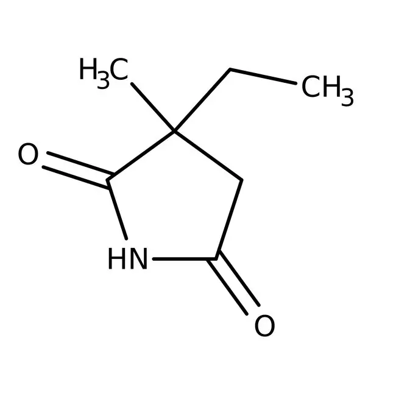
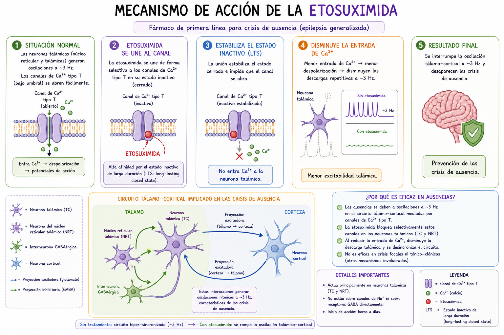

La etosuximida atraviesa la barrera hematoencefálica y alcanza el sistema nervioso central, donde ejerce su acción principalmente en neuronas del tálamo, que presentan una alta expresión de canales de Ca²⁺ tipo T en el soma y las dendritas proximales.
A nivel de la membrana neuronal, la etosuximida inhibe de manera selectiva la corriente de Ca²⁺ tipo T (I_T), disminuyendo la probabilidad de apertura de estos canales y reduciendo la conductancia al calcio.
Durante la fase de hiperpolarización inducida por la inhibición GABAérgica, los canales tipo T se desinactivan normalmente; la etosuximida no interfiere con este proceso, por lo que los canales permanecen disponibles para activarse.
Sin embargo, cuando ocurre la despolarización leve posterior que normalmente activaría estos canales, la presencia del fármaco limita su apertura, reduciendo significativamente la entrada transitoria de Ca²⁺ al citoplasma.
Como consecuencia, la despolarización de bajo umbral (low-threshold spike, LTS) se ve disminuida o no alcanza la amplitud necesaria. Al no generarse una LTS adecuada, no se alcanza el umbral requerido para activar repetidamente los canales de Na⁺ dependientes de voltaje, por lo que se inhibe la descarga en ráfaga (burst firing) característica de las neuronas talámicas.
Al impedir la generación de estas ráfagas, se interrumpe la oscilación rítmica del circuito tálamo-cortical, lo que evita la sincronización neuronal responsable de las descargas punta-onda de aproximadamente 3 Hz observadas en las crisis de ausencia.
Como resultado final, la etosuximida suprime el mecanismo eléctrico que mantiene las crisis de ausencia, con un efecto relativamente selectivo sobre este circuito en comparación con otros anticonvulsivos.
La etosuximida actúa principalmente en las neuronas del tálamo inhibiendo los canales de Ca²⁺ tipo T, que son fundamentales para generar las descargas rítmicas características de las crisis de ausencia. Aunque durante la hiperpolarización inducida por el GABA estos canales se desactivan normalmente y quedan listos para activarse, la etosuximida reduce su probabilidad de apertura cuando ocurre la despolarización leve posterior. Esto disminuye la entrada transitoria de calcio (corriente I_T), debilitando o evitando la formación del low-threshold spike (LTS).
Al no generarse una LTS adecuada, no se alcanza el umbral necesario para activar repetidamente los canales de sodio, por lo que se inhibe la descarga en ráfaga (burst firing) de las neuronas talámicas. Como consecuencia, se interrumpe la oscilación rítmica del circuito tálamo-cortical y se evita la sincronización neuronal que produce las descargas punta-onda de aproximadamente 3 Hz. De esta manera, la etosuximida suprime de forma relativamente selectiva el mecanismo eléctrico que mantiene las crisis de ausencia.
Audio explicativo
Material visual

